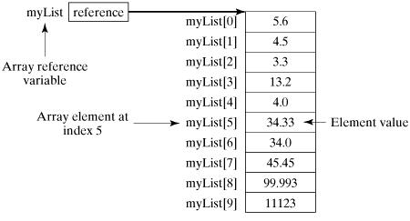

Java 配列
配列は、あらゆるプログラミング言語にとって重要なデータ構造の一つです。もちろん、言語によって配列の実装や処理は異なります。
Java 言語で提供される配列は、固定サイズの同型要素を格納するために使用されます。
配列変数を宣言できます。たとえば、numbers
このチュートリアルでは、Java 配列の宣言、作成、初期化について説明し、対応するコードを示します。
配列変数の宣言
プログラムで配列を使用するには、まず配列変数を宣言する必要があります。以下は配列変数の宣言構文です：
注意：使用を推奨しますdataType[] arrayRefVarの宣言スタイルで配列変数を宣言します。dataType arrayRefVar[] スタイルは C/C++ 言語由来で、Java で採用されたのは C/C++ プログラマーが Java 言語をすばやく理解できるようにするためです。
例
以下はこの2つの構文のコード例です：
配列の作成
Java 言語では new 演算子を使用して配列を作成します。構文は次のとおりです：
arrayRefVar = new dataType[arraySize];
上記の構文ステートメントは2つのことを行います：
- 1. dataType[arraySize] を使用して配列を作成します。
- 2. 新しく作成した配列の参照を変数 arrayRefVar に代入します。
配列変数の宣言と配列の作成は、次のように1つのステートメントで完了できます：
dataType[] arrayRefVar = new dataType[arraySize];
また、次の方法で配列を作成することもできます。
dataType[] arrayRefVar = {value0, value1, ..., valuek};
配列の要素にはインデックスでアクセスします。配列のインデックスは 0 から始まるため、インデックス値は 0 から arrayRefVar.length-1 までです。
例
次のステートメントは、最初に配列変数 myList を宣言し、次に 10 個の double 型要素を含む配列を作成して、その参照を myList 変数に代入します。
TestArray.java ファイルコード：
上記の例の出力結果は次のとおりです：
总和为： 11367.373
次の図は配列 myList を示しています。ここで、myList 配列には 10 個の double 要素があり、その添字は 0 から 9 です。

配列の処理
配列の要素型と配列サイズは確定しているため、配列要素を処理するときは通常、基本ループまたは For-Each ループを使用します。
例
この例は、配列の作成、初期化、操作の方法を完全に示しています：
TestArray.java ファイルコード：
上記の例をコンパイルして実行した結果は次のとおりです：
1.9 2.9 3.4 3.5 Total is 11.7 Max is 3.5
For-Each ループ
JDK 1.5 では、For-Each ループまたは拡張 for ループと呼ばれる新しいループタイプが導入されました。これは添字を使用せずに配列を走査できます。
構文は次のとおりです：
for(type element: array)
{
System.out.println(element);
}
例
この例は、配列 myList のすべての要素を表示するために使用します：
TestArray.java ファイルコード：
上記の例をコンパイルして実行した結果は次のとおりです：
1.9 2.9 3.4 3.5
関数の引数としての配列
配列はメソッドに引数として渡すことができます。
たとえば、次の例は int 配列の要素を出力するメソッドです：
次の例では、printArray メソッドを呼び出して 3, 1, 2, 6, 4, 2 を出力します：
関数の戻り値としての配列
上記の例では、result 配列が関数の戻り値として使用されています。
多次元配列
多次元配列は配列の配列と見なすことができます。たとえば、2次元配列は特別な1次元配列であり、その各要素は1次元配列です。例：
多次元配列の動的初期化（2次元配列を例に）
1. 各次元に直接スペースを割り当てます。形式は次のとおりです：
type は基本データ型と複合データ型にできます。typeLength1 と typeLength2 は正の整数である必要があり、typeLength1 は行数、typeLength2 は列数です。
例：
解説：
2次元配列 a は、2行3列の配列と見なすことができます。
2. 最上位の次元から開始して、各次元にスペースを割り当てます。例：
解説：
s[0]=new String[2] 和 s[1]=new String[3]最上位の次元に参照スペースを割り当てます。つまり、最上位の次元がデータを保存できる最大長を制限し、次にその各配列要素に個別にスペースを割り当てます。s0=new String("Good")などの操作を行います。
多次元配列の参照（2次元配列を例に）
2次元配列の各要素への参照方法はarrayName[index1][index2]、例えば：
Arrays クラス
java.util.Arrays クラスは配列を簡単に操作でき、提供されるすべてのメソッドは静的です。
次の機能があります：
- 配列に値を代入：fill メソッドを使用。
- 配列のソート：sort メソッドを使用して昇順に並べ替え。
- 配列の比較：equals メソッドを使用して配列内の要素の値が等しいかどうかを比較。
- 配列要素の検索：binarySearch メソッドを使用して、ソート済みの配列に対して二分探索を行うことができます。
詳細は次の表を参照してください：
| 番号 | メソッドと説明 |
|---|---|
| 1 |
public static int binarySearch(Object[] a, Object key) 二分探索アルゴリズムを使用して、指定された配列内で指定された値のオブジェクト（Byte、Int、double など）を検索します。配列は呼び出し前にソートされている必要があります。検索値が配列に含まれている場合は検索キーのインデックスを返します。それ以外の場合は (-( を返します。挿入ポイント) - 1)。 |
| 2 |
public static boolean equals(long[] a, long[] a2) 指定された2つの long 型配列が互いに等しい場合、true を返します。2つの配列が同じ数の要素を含み、2つの配列内の対応するすべての要素ペアが等しい場合、これら2つの配列は等しいと見なされます。言い換えれば、2つの配列が同じ順序で同じ要素を含む場合、2つの配列は等しいです。同じメソッドが他のすべての基本データ型（Byte、short、Int など）にも適用されます。 |
| 3 |
public static void fill(int[] a, int val) 指定された int 値を、指定された int 型配列の指定された範囲内の各要素に割り当てます。同じメソッドが他のすべての基本データ型（Byte、short、Int など）にも適用されます。 |
| 4 |
public static void sort(Object[] a) 指定されたオブジェクト配列を、その要素の自然順序に従って昇順に並べ替えます。同じメソッドが他のすべての基本データ型（Byte、short、Int など）にも適用されます。 |
その他の拡張練習問題
Jabin
957***846@qq.com
配列を逆順にする例：
public class Test2 { public static void main(String[] args){ int[] test= {1,2,4,5,7}; for (int i : test) { System.out.print(i+" "); } System.out.println("\n"); test = Test2.reverse(test); for (int i : test) { System.out.print(i+" "); } } public static int[] reverse(int[] arr){ int[] result = new int[arr.length]; for (int i = 0,j=result.length-1; i < arr.length; i++,j--) { result[j] = arr[i]; } return result; } }Jabin
957***846@qq.com
飛翔するタンポポ
dar***o@163.com
// 声明二维数组：有两行，列数待定，数组结构 = { { }, { } } String s[][] = new String[2][]; // 确定每行的元素个数，第一行有2个元素，第二行有3个元素， // 数组结构 = {{"E1", "E2"}, {"E1", "E2", "E3"}} s[0] = new String[2]; s[1] = new String[3];飛翔するタンポポ
dar***o@163.com
angelra
264***8638@qq.com
配列と文字列の変換処理の実装
public class Test { public static void main(String args[]) { String str = "helloworld"; char[] data = str.toCharArray();// 将字符串转为数组 for (int x = 0; x < data.length; x++) { System.out.print(data[x] + " "); data[x] -= 32; System.out.print(data[x] + " "); } System.out.println(new String(data)); } }angelra
264***8638@qq.com
Hantn
473***567@qq.com
バブルソート
public class BubbleSort { /** * N个数字要排序完成，总共进行N-1趟排序，每i趟的排序次数为(N-i)次，所以可以用双重循环语句，外层控制循环多少趟，内层控制每一趟的循环次数。 * @param args */ public static void main(String[] args) { int arr[] = {26,15,29,66,99,88,36,77,111,1,6,8,8}; for(int i=0;i < arr.length-1;i++) {//外层循环控制排序趟数 for(int j=0; j< arr.length-i-1;j++) { //内层循环控制每一趟排序多少次 // 把小的值交换到前面 if (arr[j]>arr[j+1]) { int temp = arr[j]; arr[j] = arr[j+1]; arr[j+1] = temp; } } System.out.print("第"+(i+1)+"次排序结果："); //列举每次排序的数据 for(int a=0;a<arr.length;a++) { System.out.print(arr[a] + "\t"); } System.out.println(""); } System.out.println("最终排序结果："); for(int a = 0; a < arr.length;a++) { System.out.println(arr[a] + "\t"); } } }Hantn
473***567@qq.com
WaterHole
710***626@qq.com
選択ソート：（バブルソートより速く、実行回数が少ない）：
public class Start { public static void main(String[] args) { int[] arr={20,60,51,81,285,12,165,51,81,318,186,9,70}; for(int a:arr) { System.out.print(a+" "); } System.out.println("\n"+"---------------从小到大---------------"); arr=toSmall(arr); for(int a:arr) { System.out.print(a+" "); } System.out.println("\n"+"---------------从大到小---------------"); arr=toBig(arr); for(int a:arr) { System.out.print(a+" "); } } // 从大到小 public static int[] toSmall(int[] arr) { //遍历数组里除最后一个的其他所有数，因为最后的对象没有与之可以相比较的数 for(int i=0;i<arr.length-1;i++) { /*遍历数组里没有排序的所有数，并与上一个数进行比较 *“k=i+1”因为自身一定等于自身，所以相比没有意义 *而前面已经排好序的数，在比较也没有意义 */ for(int k=i+1;k<arr.length;k++) { if(arr[k]<arr[i])//交换条件（排序条件） { int number=arr[i]; arr[i]=arr[k]; arr[k]=number; }//交换 } } return arr; } // 从小到大 //和前面一样 public static int[] toBig(int[] arr) { for(int i=0;i<arr.length-1;i++) { for(int k=i+1;k<arr.length;k++) { if(arr[k]>arr[i]) { int number=arr[i]; arr[i]=arr[k]; arr[k]=number; } } } return arr; } }WaterHole
710***626@qq.com
冰糕
257***9843@qq.com
参考アドレス
java.util.Arraysクラスは配列を簡単に操作でき、提供されるすべてのメソッドは静的です。以下の機能があります：
import java.util.Arrays; public class TestArrays { public static void output(int[] array) { if (array != null) { for (int i = 0; i < array.length; i++) { System.out.print(array[i] + " "); } } System.out.println(); } public static void main(String[] args) { int[] array = new int[5]; // 填充数组 Arrays.fill(array, 5); System.out.println("填充数组：Arrays.fill(array, 5)："); TestArrays.output(array); // 将数组的第2和第3个元素赋值为8 Arrays.fill(array, 2, 4, 8); System.out.println("将数组的第2和第3个元素赋值为8：Arrays.fill(array, 2, 4, 8)："); TestArrays.output(array); int[] array1 = { 7, 8, 3, 2, 12, 6, 3, 5, 4 }; // 对数组的第2个到第6个进行排序进行排序 Arrays.sort(array1, 2, 7); System.out.println("对数组的第2个到第6个元素进行排序进行排序：Arrays.sort(array,2,7)："); TestArrays.output(array1); // 对整个数组进行排序 Arrays.sort(array1); System.out.println("对整个数组进行排序：Arrays.sort(array1)："); TestArrays.output(array1); // 比较数组元素是否相等 System.out.println("比较数组元素是否相等:Arrays.equals(array, array1):" + "\n" + Arrays.equals(array, array1)); int[] array2 = array1.clone(); System.out.println("克隆后数组元素是否相等:Arrays.equals(array1, array2):" + "\n" + Arrays.equals(array1, array2)); // 使用二分搜索算法查找指定元素所在的下标（必须是排序好的，否则结果不正确） Arrays.sort(array1); System.out.println("元素3在array1中的位置：Arrays.binarySearch(array1, 3)：" + "\n" + Arrays.binarySearch(array1, 3)); // 如果不存在就返回负数 System.out.println("元素9在array1中的位置：Arrays.binarySearch(array1, 9)：" + "\n" + Arrays.binarySearch(array1, 9)); } }出力結果：
冰糕
257***9843@qq.com
参考アドレス
支上上
849***107@qq.com
配列の容量が足りない場合は、Arrays.copyOf() を使用して拡張できます：
最初の仮引数は拡張が必要な配列を指し、その後の引数は拡張後のサイズです。内部実装は実際には System.arrayCopy() を使用しており、内部で長さが newLength、型が E の配列を新たに作成します。
import java.util.Arrays; public class Main { public static void main(String[] args) { int[] a= {10,20,30,40,50}; a= Arrays.copyOf(a,a.length+1); for(int i=0;i<a.length;i++) { System.out.println(a[i]); } } }デフォルトでは補填0、出力結果は：10 20 30 40 50 0
支上上
849***107@qq.com
支上上
849***107@qq.com
配列で実装した小さなゲーム
プログラムはランダムに一定の順序で並んだ5つの文字を生成し、推測結果とします。
プレイヤーは複数回推測できます。1回推測するたびに、完全に正しければゲームが終了し、プレイヤーのゲームスコアを計算して出力します。正しくない場合は、推測結果を表示します。例えば、正しい文字がいくつあるか、正しい文字の位置情報などを表示し、プレイヤーにゲームを続行するよう促します。途中でEXITを入力すると、ゲームは早期終了します。
import java.util.Scanner; //猜字符小游戏 public class Guessing { private static Scanner scan; // 主方法 public static void main(String[] args) { scan = new Scanner(System.in); char[] chs = generate(); System.out.println(chs); int count = 0; // 猜错的次数 while (true) { // 自造死循环 System.out.println("猜吧!"); String str = scan.next().toUpperCase(); // 获取用户输入的字符串 if (str.equals("EXIT")) { // 判断字符串内容相等 System.out.println("下次再来吧!"); break; } char[] input = str.toCharArray(); // 将字符串转换为字符数组 int[] result = check(chs, input); if (result[0] == chs.length) { // 对 int score = 100 * chs.length - 10 * count; System.out.println("恭喜你，猜对了!得分为:" + score); break; } else { count++; System.out.println("字符对个数为:" + result[1] + "，位置对个数为:" + result[0]); } } } // 生成随机字符数组chs public static char[] generate() { char[] chs = new char[5]; char[] letters = { 'A', 'B', 'C', 'D', 'E', 'F', 'G', 'H', 'I', 'J', 'K', 'L', 'M', 'N', 'O', 'P', 'Q', 'R', 'S', 'T', 'U', 'V', 'W', 'X', 'Y', 'Z' }; boolean[] flags = new boolean[letters.length]; for (int i = 0; i < chs.length; i++) { int index; do { index = (int) (Math.random() * letters.length); } while (flags[index] == true); chs[i] = letters[index]; flags[index] = true; } // i=0 index=0 chs[0]='A' flags[0]=true // i=1 index=25 chs[1]='Z' flags[25]=true // i=2 index=0/25/0/25/1 chs[2]='B' flags[1]=true return chs; } // 对比:随机字符数组chs与用户输入的字符数组input public static int[] check(char[] chs, char[] input) { int[] result = new int[2]; // (0,0) for (int i = 0; i < chs.length; i++) { for (int j = 0; j < input.length; j++) { if (chs[i] == input[j]) { result[1]++; if (i == j) { result[0]++; } break; } } } return result; } }支上上
849***107@qq.com
tfbyly
905***717@qq.com
配列には、理解しにくい問題が1つあります。
java において、配列に関する記述で正しいのは(B，D )
例えば int 型の配列:
int[] arr = { 'a', 25, 45, 78, 'z' }; System.out.println(Arrays.toString(arr));出力結果は：[97, 25, 45, 78, 122]
格納された char 型の文字は自動的に int 型の ASCII コードに変換されます。
上記のコードでは、a は 97 に、z は 122 に変換されます。
したがって、配列は同じ型のデータしか格納できないというのは正しいです。
Dの選択肢。
配列の長さが固定されている場合、インデックス範囲外を防ぐために、インデックスを指定する際は添え字から1を引く必要があります。
int[] arr = { 'a', 25, 45, 78, 'z' }; int arrs = arr[5]; System.out.println(Arrays.toString(arr)); System.out.println(arrs);上記のコードでは配列の長さは5です。配列のインデックスは0から始まるため、インデックスが5のときは範囲外例外が発生します。ここでの最大インデックスは4であるべきです。
tfbyly
905***717@qq.com
路过顺便打酱油
782***197@qq.com
上記のバブルソートについて、実際にはそこまで複雑にする必要はありません。最終的に得られるのは結果です。バブルソートが何回ソートを行う必要があるかを理解するだけで十分です。例えば 1-9 の比較、1-2、2-3 などで、最大値・最小値を1つ出すのに9回必要で、その後再度比較して2番目の数値を出します。そのため自然にネストしたループを思いつきます。コードは次の通りです：
//冒泡 int[] num={2,4,9,1,6,7,9,12,63,4,87,54,67,65,4}; int totle; for(int i=0;i<num.length;i++){ for(int j=0;j<i;j++){ if(num[j]>num[i]){ totle=num[j]; num[j]=num[i]; num[i]=totle; } } } for(int i=num.length-1;0<=i;i--){ for(int j=i;0<=j;j--){ if(num[j]>num[i]){ totle=num[j]; num[j]=num[i]; num[i]=totle; } } } for (int k : num) { System.out.print(k+"==="); }2つのループコードはいずれも結果を出せます。違いは、1つは加算、もう1つは減算であることです。どちらかのループコードを削除しても結果は得られます。
路过顺便打酱油
782***197@qq.com
好劲的维
pal***@qq.com
Java.util.Arrays クラスのソート拡張
java.util.Arrays.sort は配列を昇順に並べ替える場合にのみ使用できます。降順にソートする場合は次を使用できますArrays.sort(数组,Collections.reverseOrder())。
実際に呼び出しているのは、Arrays.sort の静的メソッドの1つである Arrays.sort(Integer[] a,Comparator cmp) です。
Collections.reverseOrder() に関する公式の説明：
reverseOrder() メソッドは、Comparable インターフェースを実装するオブジェクトのコレクションに自然順序の逆順を課す比較子を取得するために使用されます。
import java.util.Arrays; import java.util.Collections; public class Main { public static void main(String []args) { Double[] list_double = new Double[10]; list_double[0] = 1.2; list_double[1] = 2.2; list_double[2] = 8.2; list_double[3] = 4.2; list_double[4] = 7.2; list_double[5] = 6.2; list_double[6] = 5.2; list_double[7] = 4.2; list_double[8] = 9.2; list_double[9] = 10.2; java.util.Arrays.sort(list_double); System.out.println("升序:"); for(double emp:list_double) { System.out.println(emp); } Arrays.sort(list_double,Collections.reverseOrder()); System.out.println("降序:"); for(double emp:list_double) { System.out.println(emp); } } }好劲的维
pal***@qq.com